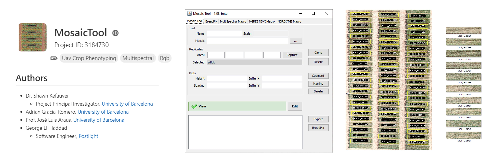

Aenean ornare velit lacus, ac varius enim lorem ullamcorper dolore aliquam.

Modern agriculture is increasingly reliant on high-tech variety selection to combat the unpredictable challenges of the global climate crisis, specifically regarding drought and extreme heat. While traditional crop evaluation was once a manual and slow process, researchers now utilize drone technology to bypass the "phenotyping bottleneck" and collect massive amounts of objective data. These aerial tools use multispectral and thermal imaging to monitor plant health, growth patterns, and water-use efficiency through 3D modeling and vegetation indices. By analyzing how different seeds respond to environmental stress, institutions like IRTA can provide farmers with precise, data-driven recommendations for more resilient harvests. This technological shift has become more accessible as compact, low-cost commercial drones replace expensive prototypes, allowing for automated and highly accurate field monitoring. Ultimately, digitalizing the selection process ensures that genetic improvements keep pace with rapidly changing environmental conditions.ImageJ/Fiji plugin.
A key milestone of this work was the development of an early prototype in collaboration with CIMMYT, providing breeders with a standardized, user-friendly tool for field data analysis. The CIMMYT Maize Scanner is an open-source high-throughput phenotyping (HTP) tool designed for agricultural research and plant breeding. Rather than being a physical scanning machine, it is a software suite that processes digital images to extract color-based indices related to plant health and performance.
The scanner is primarily used to replace or supplement subjective visual scoring for yield evaluation, disease screening, and nitrogen and water stress monitoring.
The project was led by Prof. Shawn Carlisle Kefauver at the University of Barcelona (Copyright 2015) as part of a collaboration with CIMMYT to streamline field data collection.
Aenean ornare velit lacus, ac varius enim lorem ullamcorper dolore aliquam.

Aenean ornare velit lacus, ac varius enim lorem ullamcorper dolore aliquam.

Aenean ornare velit lacus, ac varius enim lorem ullamcorper dolore aliquam.
Contact info